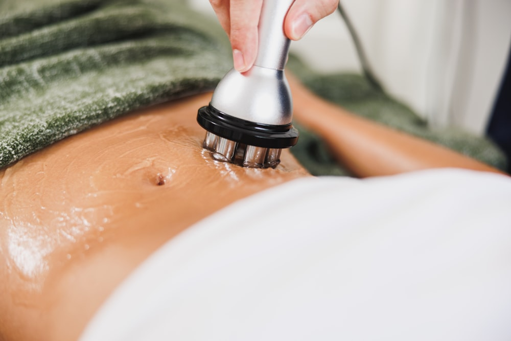
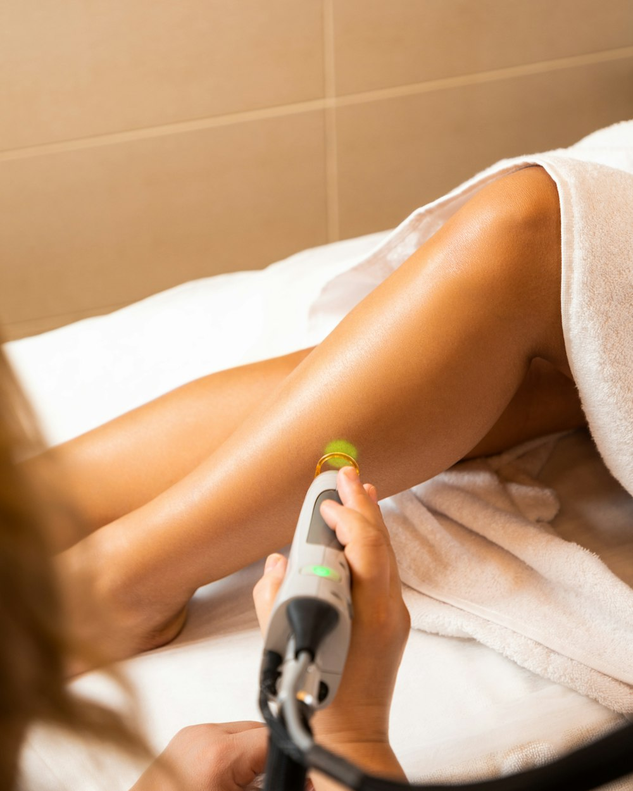
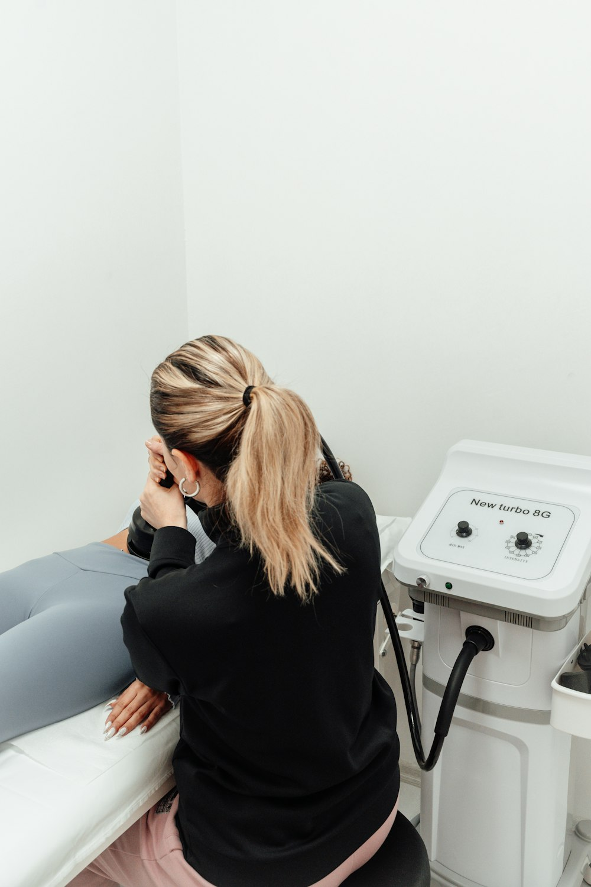
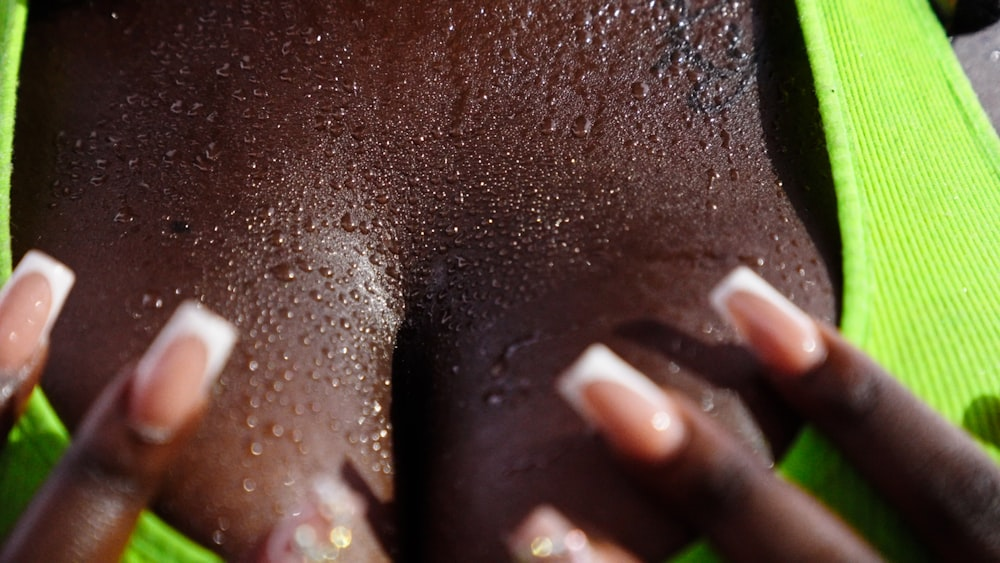
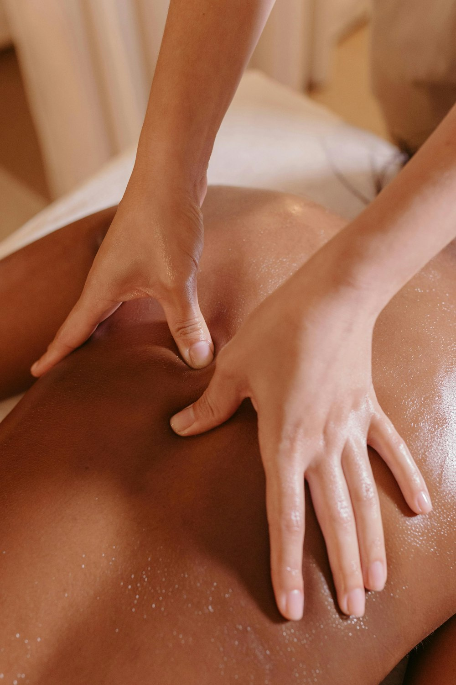
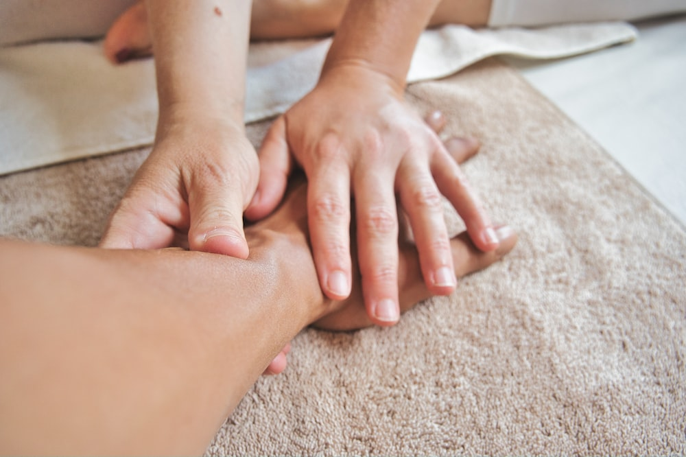
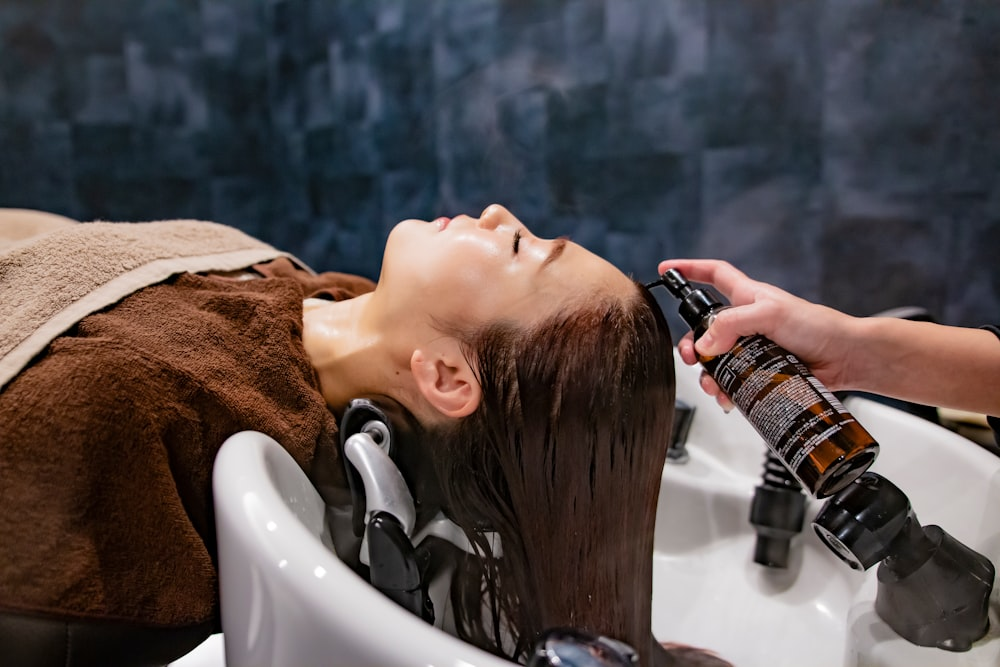

Remodelación corporal
Radiofrecuencia para calentar los tejidos en profundidad, reafirmar y mejorar el aspecto de la piel del cuerpo.
RadiofrecuenciaAparatología avanzada y protocolos combinados para remodelar, reafirmar y cuidar la piel del cuerpo. Estudiamos cada caso de forma individual y diseñamos un plan realista, con el número de sesiones que de verdad hace falta.
Estos son los tratamientos corporales que realizamos en el centro. Muchos se combinan entre sí — en la primera visita valoramos la zona y te explicamos qué esperar de cada técnica.

Radiofrecuencia para calentar los tejidos en profundidad, reafirmar y mejorar el aspecto de la piel del cuerpo.
Radiofrecuencia
Cavitación por ultrasonido para tratar acúmulos grasos resistentes en abdomen, flancos, cartucheras y muslos.
CavitaciónVacumterapia: masaje mecánico por succión para drenar, activar la circulación y mejorar la piel de naranja.
Vacumterapia
Energía electromagnética de alta intensidad que provoca contracciones supramáximas para ganar tono y firmeza.
ElectromagnéticaProtocolos combinados para tensar zonas de descolgamiento: brazos, abdomen, interior de muslo y rodilla.
Firmeza
Inducción de colágeno para atenuar estrías recientes (rojizas) y antiguas (blancas), mejorando textura y color.
RegeneraciónTratamientos de firmeza y tono para el pecho y la cara interna del brazo, zonas donde la piel pierde sostén.
Zonas específicasProtocolos de bienestar y recuperación adaptados a cada etapa, con las precauciones propias de este momento.
Etapa a etapa
Masaje descontracturante y de recuperación muscular para aliviar tensión y molestias de espalda y cervicales.
MasajeTratamientos de drenaje y depuración para reducir la retención de líquidos y la sensación de pesadez.
DrenajeRituales corporales de renovación e hidratación profunda para dejar la piel suave y luminosa.
Ritual
Hidratación, rejuvenecimiento y cuidado de una de las zonas que más delata el paso del tiempo.
Cuidado
Higiene, revitalización y cuidado del cuero cabelludo para mantener el cabello fuerte y sano.
Cuero cabelludoCuéntanos qué te gustaría mejorar. Valoramos la zona y te proponemos el camino más adecuado — sin presión y sin letra pequeña.
Reservas online por Velsy